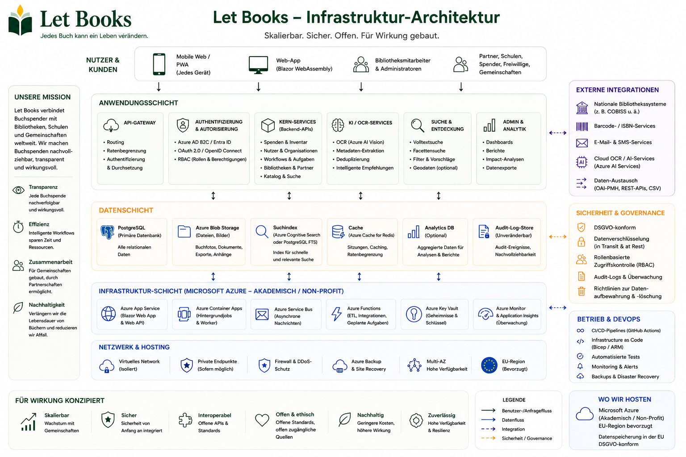

Hosting- und Governance-Beispiele beschreiben die Richtung von Architektur und Regeln, bedeuten aber keine zertifizierten Umsetzungen oder bestehenden Produktivverantwortungen.
Leitfaden für Administratoren
Bringen Sie Zugriff, Datenschutz und Logistik von Anfang an in Einklang.
Let Books muss für private Spender, Vereine oder künftige institutionelle Hosts nützlich sein. Administratoren brauchen deshalb klare Regeln für Nutzer, Tenants, Rollen, Standorte und optionale KI-Nutzung.

Was Administratoren verwalten
- Freigegebene Zugänge und Mitgliedschaften
- Tenants und Rollen
- Standortstruktur und Spendenabläufe
- Datenschutzgrenzen und Auditierung
- Optionale KI-, OCR- und Übersetzungseinstellungen
Was vermieden werden sollte
- Zugriff, der sich nur auf externe Anmeldung stützt
- Öffentliche Offenlegung exakter Lagerorte
- Pflicht zur bezahlten KI in Kernabläufen
- Vermischung physischer Exemplare mit reinen Metadaten
Zugriffsmodell
Authentifizierung kann von externen Identitätsanbietern kommen, aber Autorisierung muss unter Kontrolle der Anwendung bleiben.
Freigegebene Logins
Frühe oder private Umsetzungen sollten den Zugang auf vorab genehmigte Nutzer begrenzen.
Mitgliedschaften in Tenants
Ein Nutzer kann in mehreren Tenants mit unterschiedlichen Rollen tätig sein.
Sichtbarkeit nach Rolle
Prüfer dürfen nicht automatisch private Notizen oder Details aus dem Zuhause des Spenders sehen.
Datenschutz und Steuerung
Exakte Orte, private Notizen und Kontaktdaten müssen begrenzt bleiben. Exporte, Importe, Rollenänderungen und künftige KI-Anfragen müssen protokolliert werden.
Umsetzungsrichtung
Die Plattform muss für eine private Umsetzung funktionieren, aber offen für späteres institutionelles oder selbst betriebenes Hosting mit anbieterunabhängiger Speicherung bleiben.
Beispiel: Ein Verein nutzt Let Books für mehrere lokale Spender und Partnerbibliotheken. Ein Administrator genehmigt den Zugang, jeder Spender erhält einen eigenen Tenant, und OCR bleibt ausgeschaltet, bis dafür ein Budget vorhanden ist.